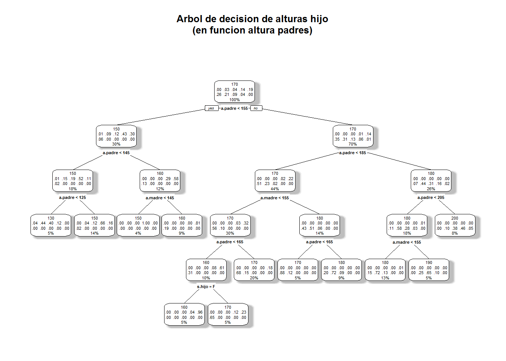
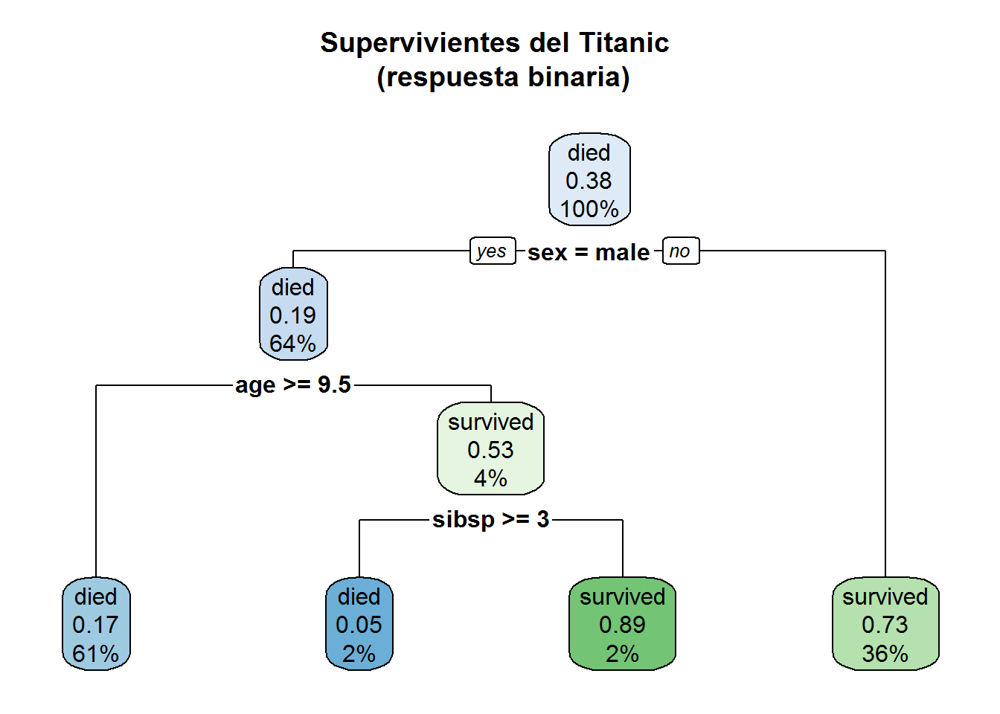
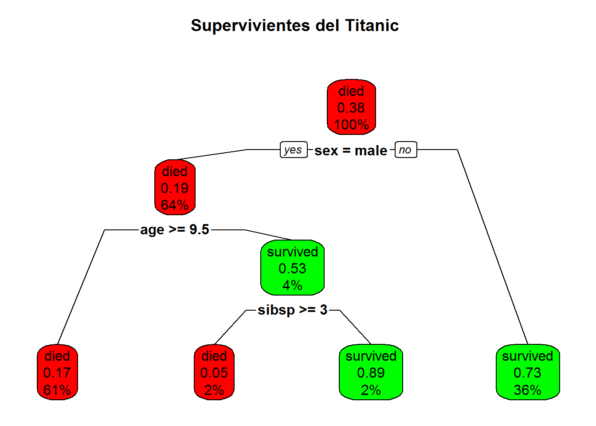

Capítulo 7 Árboles de decisión
Un árbol de decisión es una estructura ramificada que muestra las diferentes opciones y sus consecuencias. Los puntos en los que hay que tomar decisiones se muestran como nodos, las ramas unen estos nodos y las decisiones últimas son las hojas, donde el camino termina (también se denominan nodos terminales).
Existen varios paquetes de R que permiten hacer árboles de decisión.
7.1 rpart
Esta librería rpart hace árboles de decisión a partir de tablas. La función principal es rpart() que crea, a partir de un conjunto de datos, y de una fórmula de predicción, un árbol de decisión que puede usarse para pronosticar con la función predict.
7.1.1 Ejemplo
Para estos ejemplos vamos a inventar nuevamente unos datos. Tenemos una tabla en la que vienen la altura del padre, de la madre y de un hijo. Y queremos ver su relación.
# creamos los datos de ejemplo
# una tabla con alturas del padre la madre, el sexo del hijo y la altura
redondea5<-function(x,base=5){
as.integer(base*round(x/base))
}
a.padre<- redondea5(rnorm(1000, 168, 25),10)
a.madre<- redondea5(rnorm(1000, 150, 10),10)
s.hijo<-factor(rbinom(1000,1,0.5), levels=c(0,1),labels=c("M","F"))
# creo data.frame
t.alturas<-data.frame(a.padre,a.madre,s.hijo)
# Se calcula la altura del hijo con esta formula
t.alturas$a.hijo<-ifelse(t.alturas$s.hijo == "M",
(t.alturas$a.padre +t.alturas$a.madre)*rnorm(1,1,0.07)/2,
(t.alturas$a.padre +t.alturas$a.madre)*rnorm(1,1,0.05)/2)
t.alturas$a.hijo<-redondea5(t.alturas$a.hijo,10)
str(t.alturas) ## 'data.frame': 1000 obs. of 4 variables:
## $ a.padre: int 180 160 170 190 120 170 180 150 180 170 ...
## $ a.madre: int 170 150 160 150 140 150 150 140 160 150 ...
## $ s.hijo : Factor w/ 2 levels "M","F": 2 1 1 2 2 2 2 1 1 1 ...
## $ a.hijo : int 180 150 160 170 130 160 170 140 160 150 ...knitr::kable(head(t.alturas,10), "markdown")| a.padre | a.madre | s.hijo | a.hijo |
|---|---|---|---|
| 180 | 170 | F | 180 |
| 160 | 150 | M | 150 |
| 170 | 160 | M | 160 |
| 190 | 150 | F | 170 |
| 120 | 140 | F | 130 |
| 170 | 150 | F | 160 |
| 180 | 150 | F | 170 |
| 150 | 140 | M | 140 |
| 180 | 160 | M | 160 |
| 170 | 150 | M | 150 |
# Crear un modelo de clasificacion con rpart
library(rpart)
library(rpart.plot)
# creamos un modelo de clasificación en el que intervengan todas las variables
# el coeficiente cp nos extiende o acorta el arbol, simplifica resultados
model.alturas1 <- rpart(a.hijo ~ .,
data = t.alturas, method = "class", cp = .02)
# pintamos el modelo
rpart.plot(model.alturas1, fallen.leaves = FALSE,
main = "Arbol de decision de alturas hijo\n(en funcion altura padres)\n",
shadow.col = "gray")
# hacemos un pronostico
h2<-data.frame(a.padre= c(190,150),a.madre= c(180,140),s.hijo= c("M","M"))
predict(model.alturas1, h2,type = "class") ## 1 2
## 160 140
## Levels: 110 120 130 140 150 160 170 180 190 2007.1.2 Ejemplo 2
Vamos a ver otro ejemplo con los datos del Titanic que trae R por defecto.
data(ptitanic)
#---------------------------------------------------------------------------
sobrevive.model <- rpart(survived ~ ., data = ptitanic, cp = .02)
# cp = .02 for small demo tree
# representamos el modelo
rpart.plot(sobrevive.model,
main = "Supervivientes del Titanic \n (respuesta binaria)")
# representamos el modelo de otra forma
rpart.plot(sobrevive.model, type = 2, clip.right.labs = FALSE,
branch = .6,
box.palette = c( "red","green"), # override default GnBu palette
main = "Supervivientes del Titanic \n")
7.2 overfitting
Los árboles de decisión son bastante problemáticos con la sobrestimacion de parametros, pues la metodología obliga siempre a divisiones paralelas a los ejes de variables y puede generar muchas ramas, pese a que el modelo puede ser muy sencillo.
Son necesarias varias acciones previas siempre antes de emprender la clasificación.
- simplificar los datos, normalizar o realizar acciones que agrupen los datos y eviten la multiplicación de casos cruzados. Por ejemplo el simple hecho de redondear los valores numéricos a base 5 o 10 , puede eliminar de golpe miles de opciones irrelevantes.
- usar los parámetros de
rpartpara simplificar el modelo. Esto se hace con el argumentorpart.control(cp= 0.2, maxdepth = 30, minsplit = 20)de varias formas:cpes un control global que simplifica todomaxdepthindica el máximo numero de ramasminsplitindica el numero mínimo de ocurrencias de ese conjunto para considerarlo en un grupo.
- Otro aspecto fundamental es que se recomienda dividir los datos de partida en dos conjuntos, uno con el 75% de los registros para entrenamiento y otro con el 25% de los datos para test o comprobación del ajuste del modelo. Esto nos hace simplificar y no sobredimiensionar el modelo.
La función sample() es muy útil en la tarea de seleccionar una muestra de test y otra de entrenamiento.
# ejemplo de division de una muestra
# contamos el num de registro de la base de datos del titanic
nrow(ptitanic)## [1] 1309# calculamos el 75%
num_reg_entrena<-as.integer(0.75*nrow(ptitanic))
# Creamos una muestra aleatoria de registros de entrenamiento
v_titanic_train <- sample(nrow(ptitanic), num_reg_entrena)
# Creamos el conjunto de registros de entrenamiento
titanic_train <- ptitanic[v_titanic_train,]
head(titanic_train)## pclass survived sex age sibsp parch
## 183 1st survived female 30 0 0
## 960 3rd died male 32 0 0
## 1023 3rd died male NA 0 0
## 829 3rd died female 10 5 2
## 1163 3rd survived male NA 0 0
## 595 2nd died male 66 0 0# Creamos los datos de comprobación o test (notese el -)
titanic_test <- ptitanic[-v_titanic_train,]Vamos a crear el modelo y entrenarlo
# CReamos un modelo de suervivencia en el titanic
sobrevive.model <- rpart(survived ~ ., data = titanic_train, cp = .02)
# ahrora hacemos predicciones sobre el grupo de test
titanic_test$pred <- predict(sobrevive.model,titanic_test, type = "class")
head(titanic_test)## pclass survived sex age sibsp parch pred
## 1 1st survived female 29 0 0 survived
## 5 1st died female 25 1 2 survived
## 12 1st survived female 18 1 0 survived
## 13 1st survived female 24 0 0 survived
## 16 1st died male NA 0 0 died
## 22 1st survived female 47 1 1 survived# Examinamos los resultados con la matriz de confusion
table(titanic_test$pred,titanic_test$survived)##
## died survived
## died 160 35
## survived 39 94# Calculamos la bondad del modelo sobre el grupo de test
100*mean(titanic_test$pred==titanic_test$survived)## [1] 77.43902Como vemos el 77 % de ajuste es un valor alto, pero no infalible.
7.3 Poda de los árboles
Dada la facilidad con la que un árbol se complica, muchos paquetes tienen funciones especiales para cortar, limitar y optimizar el tamaño y la forma de los arboles. Por ejemplo con la librería rpart lo podemos hacer limitando la profundidad del árbol y el número de divisiones máximo.
El proceso puede hacerse antes o después de crear el árbol, en lo que llamamos pre y post poda de control. En concreto la librería rpart contiene un parámetro que hemos estado usando el cp, que controla la complejidad del árbol.
# Ejemplo de pre-poda en rpart
require(rpart)
control.poda <- rpart.control(maxdepth = 2, minsplit = 10)
Titanic.model <- rpart(survived ~ .,
data = titanic_train,
method = "class",
control = control.poda)
rpart.plot(Titanic.model)
# cambiando los parametros de poda el modelo es diferente:
control.poda <- rpart.control(maxdepth = 4)
Titanic.model <- rpart(survived ~ .,
data = titanic_train,
method = "class",
control = control.poda)
rpart.plot(Titanic.model)
# Ejemplo de post poda
# el parametro cp, controla la post poda
# podemos ver su influencia dibujando la grafica de cp
plotcp(Titanic.model)
# y simplificar el modelo anterior ya calculado
# como apreciamos a partir de cp=0.1 el modelo se simplifica mucho
rpart.plot(prune(Titanic.model, cp = 0.10))